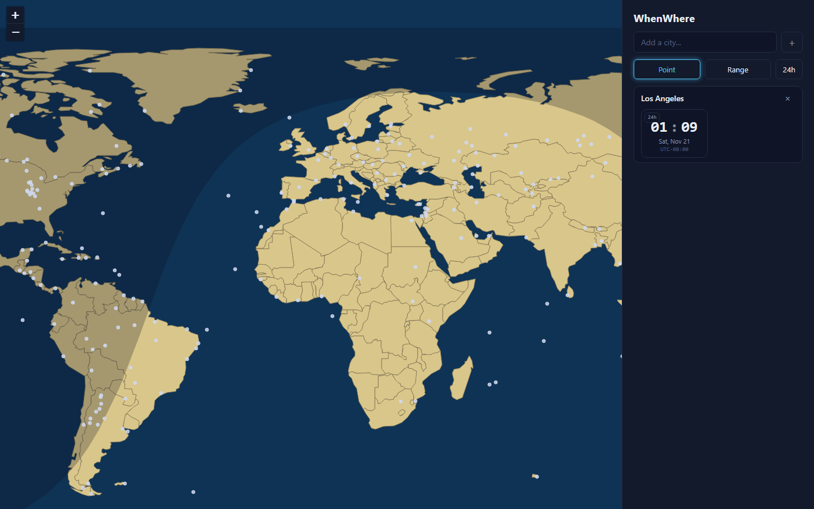
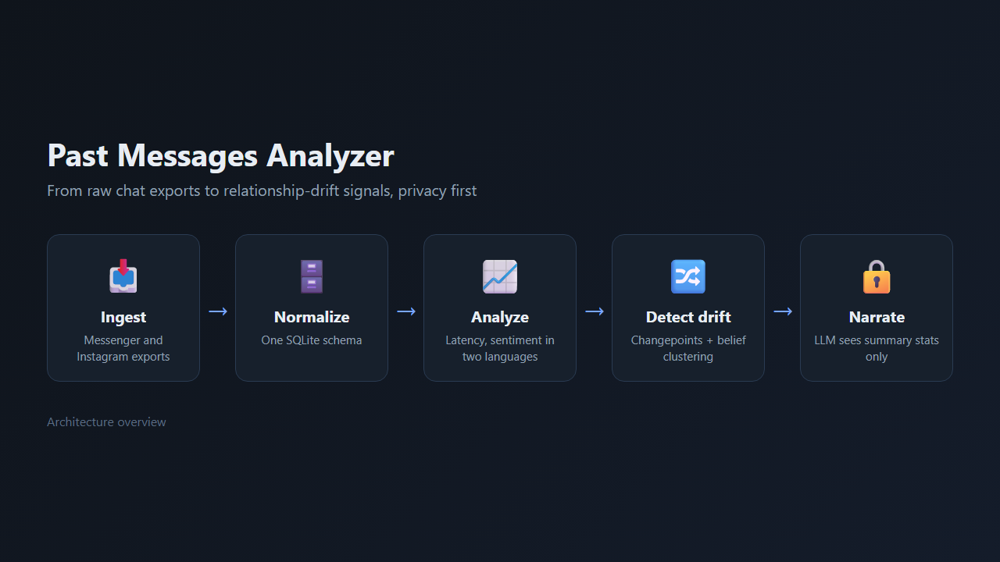
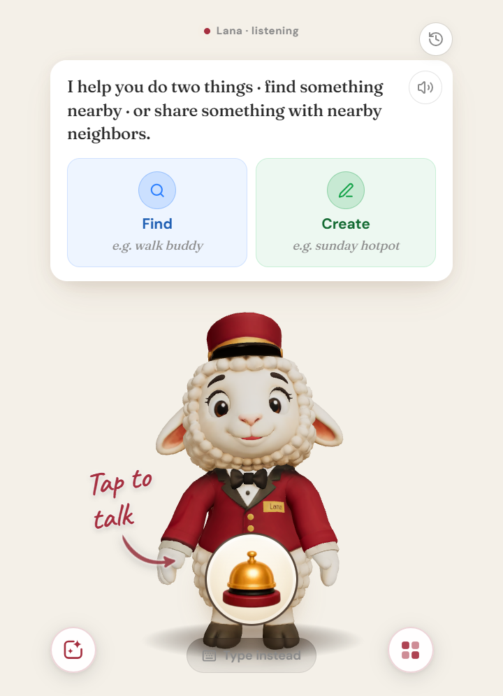
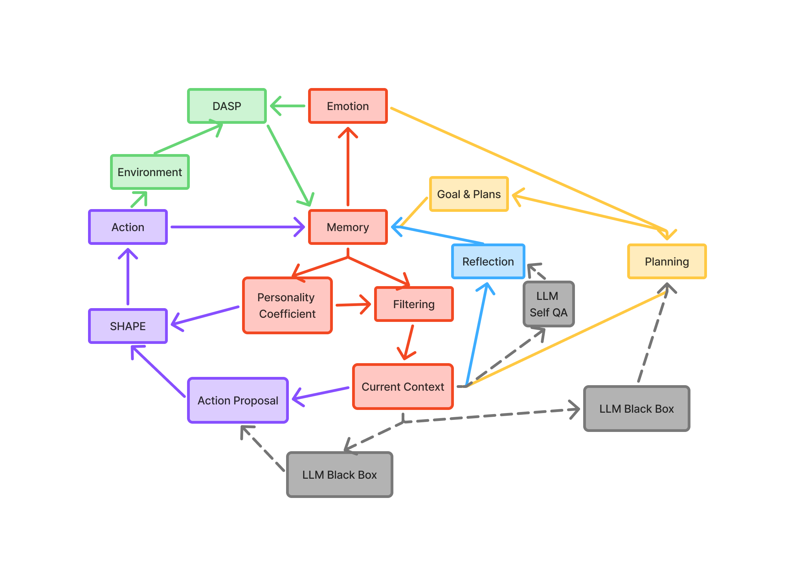

Selected work 精選作品 Two things worth a look if you only have a minute.
時間不多的話，看這兩個就夠了。
🏠 Civilizism
What if you simulated one person really well, then simulated a lot of them?
如果把一個人模擬得夠像，再把一大群模擬代理人放在一起，會怎麼樣？
A social simulation where nobody scripts the outcome. The model proposes actions, and a personality engine decides which one happens.
一個沒有劇本的社會模擬。AI只負責提出想做的事，到底做不做，由人格引擎說了算。
A toy: seven stages of one made-up day. The real replay viewer is one click away.
純粹是個小玩具：虛構的一天，分成七個階段。真正的回放就在旁邊，點一下就能看。
Watch a replay 觀看回放 Full story 完整故事
🧪 Phygtl · Agentic Systems Engineering Intern Phygtl · Agentic Systems Engineering實習生
Nobody had built evaluation for Lana, so I did. The entire eval codebase is mine.
沒人替Lana做過評測，那就我來。整套eval的程式碼，全部是我寫的。
192 simulated conversations every night 每晚自動跑的模擬對話
5 evaluation pipelines, built from scratch 從零自己蓋起來的評測管線
69% cheaper PR gate, same safety signal PR閘門的成本降幅，安全訊號照舊
1,547 utterances behind the intent merge the CEO adopted 句測試語料，說服了CEO採用意圖合併
Run nightly eval 跑一次夜間評測 000 / 192
A toy: it only counts. The real run is 192 conversations a night.
只是個玩具，只會數數而已。真正的評測一晚要跑192場對話。
Read the full story 看完整故事
Projects at a glance 專案一覽 The short version, for people skimming. Click any row for the whole story.
趕時間的話看這裡就好，想知道完整故事再點進去。
🏠
Civilizism
Multi-agent social simulation where personality is enforced by code, not by prompts. 多代理人社會模擬，角色的個性由程式碼管，不是靠prompt拜託AI。 Python React Live replay 線上回放
♟️
Stratego-Chess 行軍西洋棋 An original hidden-information game with a belief-tracking bot and a plain-URL interface for LLMs. 自己設計的暗棋遊戲，有會推測你棋子身分的機器人，LLM只要有網址就能跟你對戰。 TypeScript Playable 可試玩
⏰
WhenWhere
A timezone-correct meeting planner on a live day/night map. 在日夜地圖上排會議，時區絕對不會算錯。 Python FastAPI Live demo 線上展示
🔔
Claude Code Status Card
An always-on-top widget that shows which Claude Code session needs you. 一個永遠浮在最上層的小工具，哪個Claude Code session在等你，一眼就知道。 Electron Node.js
🧠
STEME & BLOC
Semantic scoring and belief-clustering engines: 0.79–0.91 F1 and 0.70 ARI on their benchmarks. 語意評分和信念分群引擎，基準測試F1 0.79–0.91、ARI 0.70。 Python NLP
📬
Cold Email Automator
An end-to-end outreach pipeline that researches, drafts, sends and tracks. 從找人、寫信、寄信到追蹤回覆，全部自動化的開發信流程。 Python Gmail API
💬
Past Messages Analyzer
Privacy-first analysis of how a friendship's tone drifts over time. 重視隱私，用來看一段友情的語氣是怎麼慢慢變的。 Python NLP
📚
Personal Knowledge Base 個人知識庫 Upload documents, ask across them, and audit your knowledge gaps. 把文件丟進去就能跨文件發問，還會告訴你哪些東西你根本沒讀過。 Python Supabase
Overview 概覽 I'm a stats student, though really more of a CS student in a trench coat, building things nobody asked for all day. The common thread: I like putting guardrails on unpredictable systems, like language models that drift, simulated people who stop acting like themselves, and game rules that accidentally give away a hidden piece. (Yes, I've noticed this is thankless. I'm doing it anyway.)
我是統計系的學生，但其實比較像是個斜槓資工學生，整天在做一些沒人叫我做的東西。這些東西有個共通點：我就是喜歡幫難以預測的系統裝上護欄，像是會越聊越偏的語言模型、演著演著就不像自己的模擬角色，還有不小心把暗棋身分洩漏出去的遊戲規則。（對，我自己也發現這吃力不討好了，但我偏偏要繼續下去。）
I'm in either Los Angeles or Taiwan, a native speaker of both English and Mandarin, and looking for software, AI engineering, or data roles. If you have an opening, let's talk. If you don't, we can still chat.
我人不是在洛杉磯就是在台灣，中英雙母語，目前在找軟體、AI工程或資料相關的工作。有相關職缺者歡迎找我聊聊，沒有職缺的話也能找我聊天啦。
Education 學歷 UCLA
B.S. Statistics & Data Science, minor in Data Science Engineering
統計與資料科學學士，輔修資料科學工程
Sept 2024 – Mar 2027 2024年9月 – 2027年3月
That's two and a half years. Call it graduating early if you insist, but I prefer to call it starting work early :)
兩年半。你堅持要說我是提早畢業的話也可以，但我比較喜歡稱自己為提前工作：）
Major GPA 3.96 主修GPA 3.96 Latin Honors candidate 拉丁榮譽候選 Dean's Honors List 院長榮譽榜
Projects 專案 Click anything for the full story: the problem, the fix, and the bugs that made me question my life choices.
每張卡片都能點開看完整故事：遇到什麼問題、怎麼解，還有那些讓我開始懷疑人生的bug。
🏠 Civilizism
What if you simulated one person really well, then simulated a lot of them? 如果把一個人模擬得夠像，再把一大群模擬代理人放在一起，會怎麼樣？ A social simulation where nobody scripts the outcome. Beliefs and relationships are just a side effect. 一個沒有劇本的社會模擬，信念和人際關係都是自己長出來的。 Open → 展開 →
♟️ Stratego-Chess ♟️ 行軍西洋棋Stratego-Chess What if chess no longer has a 100% capture rate? 如果西洋棋的吃子，不再是「碰到就吃掉」呢？ The child of Chess and Stratego. Pieces move like chess, but secret ranks decide who wins the fight. 西洋棋和行軍棋生出來的小孩。棋子的走法跟西洋棋一樣，但誰能吃掉誰，要看藏起來的階級。 Open → 展開 →

⏰ WhenWhere
What if you need to find some time to meet a friend on the other side of the globe? 如果你要跟地球另一邊的朋友喬時間，怎麼辦？ A day/night map that shows when everyone overlaps, and who else could still join. 在日夜地圖上，直接看出大家什麼時候都有空，還有哪些城市也來得及加入。 Open → 展開 →
🔔 Claude Code Status Card
What if you could tell which Claude Code session needs you without alt-tabbing through all of them? 如果不用一個一個切視窗，就知道是哪個Claude Code session在等你呢？ A tiny always-on-top card per session: blue is working, red is "come here", green is done. 每個session一張浮在最上面的小卡：藍色是在忙、紅色是「快來」、綠色是做完了。 Open → 展開 →
🧠 STEME & BLOC
What if you could turn "sincerity" into a number without calling an LLM every time? 如果不用每次都問LLM，就能把「真誠」變成一個數字呢？ Two research engines under Civilizism: semantic scoring and incremental belief clustering. Civilizism底下的兩個研究引擎：一個負責語意評分，一個負責信念分群。 Open → 展開 →
📬 Cold Email Automator
What if the job hunt did its own legwork? 如果求職的跑腿工作，能自己跑完呢？ Researches who to contact, drafts a note around something specific, sends it, tracks replies. 自己研究該聯絡誰，針對一個具體的點寫信，寄出去，再追蹤有沒有回。 Open → 展開 →

💬 Past Messages Analyzer
What if you could watch a friendship's tone drift over time? 如果你看得到，一段友情的語氣是怎麼慢慢變的呢？ Turns old Messenger and Instagram exports into a database and tracks the drift. Weirdly emotional for stats. 把舊的Messenger和Instagram訊息匯進資料庫，追蹤語氣的變化。以統計專題來說，感情有點太多了。 Open → 展開 →
📚 Personal Knowledge Base
What if your notes could tell you what you're missing? 如果你的筆記，會告訴你還缺什麼呢？ Drop in documents, ask questions across them, and get an audit of where the gaps are. 把文件丟進去，跨文件發問，還會幫你做一份知識缺口檢查。 Open → 展開 →
The non-work me 工作以外的我 Strong opinions, held loosely. Mostly about anime and food.
意見很多，但都不堅持。大部分跟動漫和美食有關。
📖 The Unobserved 📖 《未然？已然。》 What if your power depended on how sharply you understood reality?
如果一個人的力量，取決於他看清現實的程度呢？
An original fantasy novel · Traditional Chinese · in progress
原創奇幻小說 · 繁體中文 · 撰寫中
In this world, every attack on a living opponent gets turned into a hallucination, so their body stays untouched until you break their mind first. At the center are a boy who sealed away his ability to feel, and a girl who senses every possibility, including the ones she kills by choosing.
這個世界裡，攻擊活人的任何一擊，都會先變成幻覺。所以在你擊潰對方的心智之前，他的身體完全不會受傷。故事的主角，一個是封印了自己感受能力的少年，另一個是能感知到所有可能性的少女，包括那些因為她做了選擇、而被她親手抹掉的可能性。
Right now it's a world, a cast, and a storyboard through the first arc, planned to run past 800,000 words. The prose is the part I'm putting off. (The plan is AI help filling in between my beats, with me reviewing, and the repo says so openly.)
目前完成的是世界觀、角色，還有第一篇章的分鏡，預計會寫超過80萬字。正文，是我一直在拖的部分。（打算在我定好的劇情節點之間，讓AI幫忙補寫，我負責審稿，這件事repo裡也寫得清清楚楚。）
Read the world design 閱讀世界設定
Favorites 最愛
🏐 Sport 運動
Volleyball. I play badly, but who can reject a sport that gives you a valid excuse to roll on the floor? Also, Haikyu is fire.
排球。我打得很爛，但這種可以名正言順在地上滾來滾去的運動，誰拒絕得了？而且《排球少年》真的超神。
🏴☠️ Anime 動漫
One Piece. The only anime better than One Piece is One Piece before the time skip. After the time skip... that's hard to say... Oda, I know you can do better.
《海賊王》。比《海賊王》更好看的動漫，只有時間跳躍前的《海賊王》。跳躍之後嘛……這個不好說……尾田老師，我知道你可以的。
📚 Light novel 輕小說
No Game No Life. Yuu Kamiya, where is the new volume? It's been ten years. Also, your books are a bit too smart for me, but that's what a battle of wits is.
《遊戲人生》。榎宮祐老師，新的一集呢？已經十年了欸。不過老師寫的東西對我來說有點太燒腦了，但鬥智本來就是這樣吧。
🎤 Artist 歌手
The globally renowned pick: JJ Lin. The hot take: Ren Ran, no hesitation. I have a 15-hour Spotify playlist of only Ren Ran songs, and I didn't even know Spotify had that many.
大眾的答案是林俊傑；我的私心是任然，沒有之一。我有一份長達15小時、通通都是任然的Spotify歌單，我自己都不知道Spotify上原來有這麼多任然的歌。
🍜 Food 食物
Lu wei (Taiwanese braised street snacks), no hesitation. Stir-fried noodles are a close second. In the US the closest thing is malatang, which is somehow expensive, so my US pick is Chick-fil-A. Thinking about it is making me want some right now.
滷味，沒有之一。炒麵排第二。美國最接近的是麻辣燙，但貴得莫名其妙，所以我在美國都吃Chick-fil-A。講著講著我又餓了。
🐻 School 學校
U! C! L! A! Fight, fight, fight! I'm convinced the eight clap is written in our DNA.
U！C！L！A！Fight, fight, fight！我覺得八拍掌（eight clap）已經寫進我們的DNA了。
💬 Quote 名言
"We do these things not because they are easy, but because we thought they were going to be easy." John F. Kennedy did not say this. Maciej Cegłowski did.
「我們做這些事，不是因為很簡單，而是因為我們以為會很簡單。」這句話不是甘迺迪說的，是Maciej Cegłowski說的。
😴 Spare time 閒暇時間
Sleep and reading light novels when I'm broke, whiskey tasting when I'm rich. I'm a college student, so you can guess which one wins.
沒錢的時候就睡覺、看輕小說，有錢的時候就去喝威士忌。我是大學生，你猜哪一種比較常發生。

🧪 Phygtl · Agentic Systems Engineering Intern Agentic Systems Engineering實習生
How do we know whether Lana is doing what she's supposed to do?
我們要怎麼知道，Lana有沒有好好做她該做的事？
1 The problem 問題 Lana is Phygtl's AI concierge: a sheep in a bellhop uniform who helps people find something nearby or share something with their neighbors. When I got there, "is Lana better or worse after this change?" was answered mostly by hope, and quality meant someone chatting with her by hand. (Totally normal for a young product. Also a great way to bury landmines for your future self.) Nobody had built evaluation for her, so the whole eval codebase is mine.
Lana是Phygtl的AI管家，一隻穿著飯店服務生制服的小羊，可以幫人找附近的東西，或是跟鄰居分享東西。我剛到的時候，「這次改完，Lana是變好還是變差？」的答案基本上靠感覺，所謂的品質檢查，就是有人自己去跟她聊聊看。（對剛起步的產品來說很正常，也是給未來埋地雷的方式。）沒有人幫她做過評測，所以整個eval的程式碼庫，都是我一個人寫的。
2 My solution 我的解法 My first task was going from manual QA to a simulation environment. I used AI to build six simulated users with deliberately different personas, and they hold 192 conversations with Lana every night (6 personas × 32 seeds across 7 buckets, each seed testing one specific behavior), like a performance review she can't skip. Then five evaluation pipelines read those conversations: core conversational evaluation, claim extraction and personal-data checks, a matcher and unlock flow, conversational policy and safety, and automated triage of whatever the others flagged.
我的第一個任務，是把手動測試改成模擬環境。我用AI做了六個個性各不相同的模擬使用者，每天晚上 都會跟Lana聊192場 （6種個性 × 32組隨機種子，分散在7個類別，每個種子只測一種特定行為），就像一場她逃不掉的年度考核（除了每晚發生一次之外）。然後再由五條評測管線 去看這些對話：核心對話評測、資訊擷取與個資檢查、配對與解鎖流程、對話政策與安全，還有一條專門把前面標出來的問題自動分流。
On top of that came regression checks and CI/CD that answer the real question: are we making Lana better or worse? A pull-request gate blocks the push on any regression above 5% on an axis, or any new hard failure. The gate doesn't accept "probably fine", only "confirmed fine"... or at least "confirmed fine, as far as the tests can tell".
再往上，我加了回歸檢查和CI/CD，來回答真正重要的問題：我們到底是讓Lana變好了，還是變差了？只要任何一個指標退步超過5%，或是出現新的嚴重失敗，pull request的閘門就會擋住這個push。這樣才能確保閘門不接受「應該沒事」，只讓「確定沒事」通過……或至少是「目前表現上確定沒事」。
3 Challenges & fun stories 挑戰與趣事 Before any of it was fit to ship, I let the simulation run one full pass, then went through the results stored in the dev database by hand, labeling every verdict as a true positive, true negative, false positive or false negative, and tuned my tests and eval content (the simulated users and the checks) accordingly. Not fun, but it's what makes everything after it worth trusting. Later, a measured audit found my own simulated user breaking character in 13 of 102 conversations (12.7%). Once that was fixed, a failure finally meant Lana had a problem, not my simulator.
在這套東西真的能上線之前，我先讓模擬完整跑一輪，然後自己一筆一筆去看開發資料庫裡的結果，把每個判定標成真陽性、真陰性、偽陽性或偽陰性，再根據結果調整我的測試和評測內容（包括模擬使用者和各項檢查）。這件事一點都不好玩，但這能讓後面所有東西值得被信任，就是靠這一步。後來一次量化審查還發現，我自己做的模擬使用者，在102場對話裡有13場（12.7%）演著演著就出戲了。修好之後才知道以後測試失敗的時候，是Lana真的有問題，而不是我的模擬器出包。
The core idea is to split every check by how it can fail . If the right answer is known by construction (a banned word, a planted piece of personal data), plain code checks it, because a flaky check poisons a deploy gate. Only the truly subjective questions, like "warm, but not sycophantic?", go to an LLM judge. And every check ships with a test that feeds it a deliberate violation, because a green run means nothing if the check can't fail. (Yes, I wrote tests for my tests. No, I don't feel bad about it.)
核心的想法是，每一項檢查都先問：它會怎麼失敗？如果正確答案在設計上就已經知道（比如禁用詞、刻意埋進去的個資），就直接用程式碼檢查，因為不穩定的檢查會把部署閘門搞爛。只有真正主觀的問題，像是「溫暖，但不會諂媚嗎？」，才交給LLM評審。而且每一項檢查，我都另外寫一個故意違規的測試去餵它，因為如果檢查根本不可能失敗，那全部通過也沒有任何意義。（對，我幫我的測試寫了測試，而且我一點都不覺得不好意思。）
I kept the judge model off the product's own model family, so it never grades its own kind. (Turns out nepotism works on AI models too.) And the triage tool collapsed a 729-row human-review queue by re-deriving evidence from stored transcripts instead of asking a second LLM, then measured itself against 51 human-labeled rows rather than just asserting it was right.
我也刻意讓評審模型，和產品本身用的不是同一個模型家族，這樣它才不會幫自己人打高分。（我也是做了才知道，裙帶關係在AI模型上也適用。）至於分流工具，它把729筆等著人工審核的案子收掉，靠的是從儲存的對話紀錄重新找證據，而不是再去問另一個LLM。它還拿51筆人工標好的資料來檢驗自己，而不是光說「我是對的」。
The PR gate originally ran 6 personas × 18 seeds = 108 cases on every pull request. I cut it to 3 × 11 = 33, a 69% reduction, based on measured evidence. One seed from the most expensive bucket stayed because it was the only place hallucination ever fired, and I picked personas for contrast, not for failure count, since a gate that overfits to known bugs can't find the unknown ones. Nothing was deleted, only deferred to the nightly 192, instead of making every engineer wait an hour and a half on a PR for each push.
PR閘門原本每次pull request都跑6個個性 × 18個種子 = 108個案例。我根據量測出來的證據，把它砍到3 × 11 = 33個，少了69%。最貴的那個類別反而留了一個種子下來，因為只有它觸發過幻覺；個性則是挑差異最大的，而不是挑失敗最多的，因為只針對已知bug設計的閘門找不到未知的bug。完整內容倒是沒有被刪掉，只是挪到每晚的192場裡去跑，而不是讓工程師每次push都要等一個半小時的PR。
The part I'm proudest of: I argued that a pile of overlapping intents in the product should be merged. I wrote the proposal down in a dated document before testing it, then checked it on a 1,547-utterance set I built for the purpose, which broke a 39.9% baseline pass rate into three distinct root causes. The CEO approved it and the AI lead adopted it. Turns out "I have a test set" is a very persuasive sentence.
最讓我驕傲的是這件事：我認為產品裡那一堆互相重疊的意圖（intent）應該合併。我先把提案寫進一份有日期的文件，再拿我自己專門做的1,547句測試集去驗證，把39.9%的基準通過率拆成三個不同的根本原因。CEO核准了，AI負責人也採用了。結果證明，「我有測試集」是一句非常有說服力的話。
4 Tech stack & what I learned 技術堆疊與我學到的 Python pytest GitHub Actions LLM-as-judge Simulated users Protocol-typed ports
This is where my vibe coding went from projects to commercial level: code that ran every night, gated real deploys, and that other engineers depended on. That raised the bar for everything: checks that can fail, a judge calibrated against something outside itself, tests for the tests.
在這裡，我的vibe coding從個人專案，升級到了商用等級：程式每天晚上都在跑、替真正的部署把關，而且有別的工程師要靠它。我對所有東西的標準也跟著被拉高：會失敗的檢查、用自己以外的東西校準過的評審、替測試寫的測試。
It also meant inheriting a codebase with no conventions, so I had to write them for myself and whoever comes next: an agent-facing conventions doc and a README for every harness. (Is this what it feels like to be a founding father writing the constitution for your own country? I was an intern.) My role was evaluation only, so when I found real product defects, I wrote each one up for the engineer who owned it. At least I only had to find the bugs, not debug them.
這也代表我接手的是一個沒有任何規範的程式碼庫。所以我得給自己和以後接手的人從頭訂規範，於是我寫了給agent看的規範文件，每個測試框架也都有自己的README（這就是當開國元勛給自己家立國法的感覺嗎？雖然我實際上只是個實習生）。不過我的職責只有評測，所以發現真正的產品缺陷時，我還是得一個一個寫成報告交給負責的工程師，但至少我只需要找bug，不需要debug。
Open as its own page ↗ 以獨立頁面開啟 ↗
🏠 Civilizism
What if you simulated one person really well, then simulated a lot of them?
如果把一個人模擬得夠像，再把一大群模擬代理人放在一起，會怎麼樣？
1 The problem 問題 Most social simulations hardcode the outcome: the rules say how groups behave, and, surprise, they behave that way. I wanted the opposite. Build one believable individual, then see whether groups, beliefs and norms show up on their own.
大多數社會模擬都先把規則鎖死，然後……非常神奇地，群眾真的照著規則行動了。所以我想反過來：先打造一個可信的個體，再複製出一大堆，讓他們自己互動，看看群體、信念和規範會不會自己長出來。
2 My solution 我的解法 Agents that perceive, remember, reflect and plan, with memory as the hub of everything. Whatever beliefs and relationships form are a side effect and the surprise my product gives me in return. The model only proposes actions; a deterministic utility engine called SHAPE scores each one against 43 personality coefficients (Schwartz values plus HEXACO traits) and decides which actually happens. Character is enforced by code, not by prompting. AI is a powerful wild horse, but it's only a good ride if you put a mathematical rein on it.
這些代理人會感知、記憶、反思、規劃，而記憶是整個系統的核心。至於會長出什麼信念和關係，完全是副產品，也是這個產品順便送我的驚喜。模型只負責提議 要做什麼；真正決定哪件事會發生的，是一個叫SHAPE的確定性效用引擎，它會根據43個人格係數（Schwartz價值觀加HEXACO人格特質），替每個提議打分數。角色的個性是靠程式碼硬性規定的，不是靠prompt去拜託。AI再強，不受控也是白搭。

3 Challenges & fun stories 挑戰與趣事 LLM personalities drift based on vibes. In my earliest experiments, the four simulated housemates spent all day either snacking or on their way to snack, looping between the kitchen and the living room, and once tried to blend smoothies from ingredients that didn't exist. (Facts aside... that lifestyle is honestly tempting.) Then they started hiding their sadness behind cheerful small talk, and I had to ask whether that was a bug or a personality trait. Humans do it constantly, so I refused to hardcode a fix and put the control in code instead.
LLM的人格很容易憑感覺越飄越遠。我最早的實驗中那四個模擬室友整天不是在吃零食，就是在去吃零食的路上，一直在廚房和客廳之間鬼打牆，有一次還想用根本不存在的食材打果昔。（撇開事實不談……這生活確實讓人很心動。）後來他們開始用輕鬆的閒聊，掩飾自己的難過，我只好想：這到底是bug，還是個性？人本來就會這樣，所以我不想硬寫一條規則去修掉它，而是把控制放進程式碼裡。
The validation story is the nerdy one: I'm checking the whole thing against Milgram, Asch, Robbers Cave and the Stanford Prison Experiment, with predictions written down before any run so I can't cheat. The Stanford case is built so that a null result agrees with the modern reading of that study. The harness is done; the scored runs are still pending...waiting on the day I feel like letting my laptop run through an entire night and hopefully not burning down while I sleep through it.
驗證的部分是最宅的：我拿整個系統去對照Milgram、Asch、Robbers Cave和史丹佛監獄實驗，而且預測都是在跑之前就先寫好的，所以我沒辦法作弊。史丹佛那組我設計成，就算結果是什麼都沒發生 ，也符合現在學界對那個實驗的看法。測試框架已經做完了，正式計分的跑次還在等……等哪天我願意讓筆電整晚開著跑，而且祈禱它不要在我睡著的時候燒起來。
4 Tech stack & what I learned 技術堆疊與我學到的 Python NumPy sentence-transformers LiteLLM + Instructor Pydantic React
Pydantic saved my life when parsing LLM output with regex was a living hell. This was also my first real step into vibe coding. And modelling humans, drawing on psychology and biology and turning it all into functions and memories, was a living hell of its own kind.
用regex解析LLM的輸出簡直是地獄，是Pydantic救了我。這也是我第一次真正踏進vibe coding。而要模擬人類——從心理學、生物學下手，再全部變成函式和記憶——本身又是另一種地獄。
5 Demo & code Demo與原始碼 Watch a replay 觀看回放 Public repo 公開repo STEME STEME BLOC BLOC
Want to see the core simulation code? DM me, I'm happy to talk shop.
想看核心的模擬程式碼的話請私訊，我很樂意跟你交流。
Open as its own page ↗ 以獨立頁面開啟 ↗
♟️ Stratego-Chess ♟️ 行軍西洋棋Stratego-Chess What if chess no longer has a 100% capture rate?
如果西洋棋的吃子，不再是「碰到就吃掉」呢？
1 The problem 問題 Chess is perfect information: everything is on the board. Stratego is all hidden information, but its pieces just shuffle forward one square at a time. What happens if you put the secrets onto chess movement?
西洋棋是完全資訊，所有東西都攤在棋盤上。行軍棋整個都是隱藏資訊，但棋子只會一格一格慢慢往前挪。如果把那些祕密，搬到西洋棋的走法上，會變成什麼樣子？
2 My solution 我的解法 Welcome to the crossbreed of Chess and Stratego. Please don't call it a mutt; it's selective breeding :) Every piece moves like a chess piece (public), but also carries a hidden rank (secret) that decides what it beats. You can see how an enemy piece moves, never what it can capture. It is not chess: there's no checkmate, the king is just a piece, and passing is always legal. If you came to castle your way to safety, suit yourself.
歡迎來到西洋棋和行軍棋雜交的結果。別搞錯，請稱呼此為品種改良：）在這裡，每顆棋子的走法都跟西洋棋一樣（公開），但身上也藏著一個階級（祕密），決定它能吃掉誰。你看得到對方的棋子怎麼走，但永遠不知道它吃得了什麼。這不是西洋棋：沒有將死、國王只是普通的一顆棋子、而且隨時可以跳過這一回合。如果你是想靠王車易位保平安的，請自便。
No friends, like me? No worries. There's a bot to play against, and the game is friendly to the AI chatbot on your phone: swap /g/ with /llm/ in the URL and the chatbot can play with you by fetching plain links.
和我一樣沒朋友嗎？沒關係，有機器人可以陪你下。而且這個遊戲對你手機上的AI聊天機器人很友善：把網址裡的/g/改成/llm/，聊天機器人只要抓取一般連結就可以陪你下棋了。
3 Challenges & fun stories 挑戰與趣事 The fun problem is that information leaks from places you'd never expect. If the game announced "equal rank" and "bomb" differently, the announcement itself would reveal a hidden piece, so both read as the same mutual destruction. Engineers and the flag are both immune to bombs, because an immunity only one piece had would point right at it. If your setup timer runs out, the server deals you a random legal army, since a predictable default is a leaked army.
有趣的地方在於，資訊會從各個意想不到的地方洩漏出去。如果遊戲對「同階」和「炸彈」的提示不一樣，光是那個提示就會洩漏暗棋身分，所以兩種情況，都顯示成一模一樣的同歸於盡。工兵和軍旗都不怕炸彈，因為如果只有一種棋子免疫，就等於直接指給對方看。如果你佈陣的計時器跑完了，伺服器會幫你隨機排一支合法的軍隊，因為「可以預測的預設值」，就等於洩漏的軍隊。
The bot is a particle filter that keeps a running probability for what each of your pieces might be, and it plays a little randomly on purpose: a deterministic bot leaks its own ranks over enough games just by which move it reliably picks. (Though I may be the only person who will ever play that many bot games.)
這個機器人是一個粒子濾波器，會持續更新你每顆棋子可能是什麼的機率，而且我故意讓它下得有點隨機：一個完全固定的機器人，只要下的局數夠多，光是它每次都選哪一步，就會把自己的階級洩漏出去，雖然應該只有我會玩那麼多場人機局。
4 Tech stack & what I learned 技術堆疊與我學到的 TypeScript Fastify 5 Socket.IO React 19 Vite Zustand Vitest
My first step into TypeScript, and my first time seeing client/server lessons up close. As a non-CS student I learned those lessons the hard way, and thank god Claude Code exists. The biggest takeaway was to make a leak structurally impossible : hidden ranks leave the server through exactly one function, so there's no display filter to forget about.
這是我第一次碰TypeScript，也是第一次近距離接觸前後端的問題。身為非資工系的學生，這些東西我都是吃足苦頭才學會的，感謝老天有Claude Code。最大的收穫是：要讓洩漏在結構上就不可能發生 。暗棋的階級，只會從一個函式離開伺服器，所以不會有哪個顯示過濾器是被我忘記加的。
5 Demo & code Demo與原始碼 Play it 開始玩 Code 原始碼
It's on free hosting, so the first load after a quiet spell can take up to a minute. Go stretch.
它放在免費主機上，閒置一陣子之後，第一次載入可能要等一分鐘左右。先去伸個懶腰吧。
Open as its own page ↗ 以獨立頁面開啟 ↗
⏰ WhenWhere
What if you need to find some time to meet a friend on the other side of the globe?
如果你要跟地球另一邊的朋友喬時間，怎麼辦？
1 The problem 問題 As an international student from Taiwan, doing LA-to-Taipei math in my head is daily life. It's a worse problem than it sounds: only one of the two places does daylight saving, so the offset changes twice a year, and one flight can take you from +16 to -16. And I'm lazy.
身為一個從台灣來的國際學生，在腦中算洛杉磯和台北的時差是我的日常生活。但兩邊只有一邊有日光節約時間，所以時差一年會變兩次，而且搭一次飛機就要從+16變成-16，這件事比聽起來更麻煩。而且別忘了我很懶：）
2 My solution 我的解法 Add cities to a day/night map, say when each person is free, and it shows when everyone overlaps. Every other city on the map turns green or red depending on whether it could still join. There's also a simple point-in-time converter. Daylight saving and half-hour timezones are handled properly, so you can trust this more than the old fashioned clock on your wall...as long as you can find your city on the map.
在日夜地圖上加入城市，說出每個人什麼時候有空，它就會告訴你大家的空檔在哪裡重疊。地圖上其他城市，則會依照「還來不來得及加入」變成綠色或紅色。另外也有單純的時間點換算。日光節約時間和半小時的時區，它也能處理，所以比起牆上那個老派的時鐘，你更可以相信它…如果你找得到自己的城市在哪的話
3 Challenges & fun stories 挑戰與趣事 For cities far enough apart, the real overlap can land on adjacent calendar days , so we can call each other tomorrow, but your tomorrow may not be my tomorrow. "Same local window" has to be treated as a recurring daily pattern, not the date you typed. And the map itself fought me: Russia, Fiji and Antarctica drew spurious bands across the whole world because their polygons cross the antimeridian and the map library doesn't wrap. I had to split the rings.
如果兩個城市離得夠遠，真正重疊的時段，可能會落在相鄰的兩天 而不是同一個日曆日，所以我們可以明天打電話，但你的明天可能不是我的明天。地圖本身也跟我作對：俄羅斯、斐濟和南極洲的多邊形會跨過國際換日線，但地圖函式庫不會自動接起來，結果整個世界被畫上一堆莫名其妙的條紋。我只好把那些多邊形的邊界切開。
A dataset I found online saved me once, but some cities always slip through, so if yours isn't on the map, custom cities are another puzzle. Their timezone is inferred from the nearest known city, longitude first, since timezones are basically longitude bands, with a distance cutoff so a far-away neighbor's political quirks (looking at you, Adelaide) don't come along.
雖然網路上的資料庫已經救過我一次了，但總有漏網之魚的城市嘛，所以如果你找不到你的所在地……自訂城市又成了另一個難題。它的時區，是從最近的已知城市推出來的，先看經度，因為時區基本上就是一條一條的經度帶，再加上距離上限，免得被遠方鄰居的政治怪癖影響（說的就是你，阿德雷德）。
4 Tech stack & what I learned 技術堆疊與我學到的 Python FastAPI pytz Leaflet Intl API pytest Render
Civilizism taught me how to build my own framework. WhenWhere taught me when not to, because that has another name: reinventing the wheel. Thank god pytz exists, and there are already datasets online. The timezone math also runs in the browser, mirroring a tested backend, so most interactions need no round trip.
Civilizism教我怎麼自己蓋框架，WhenWhere教我什麼時候不要 自己蓋，因為那有另一個名字：閉門造車。感謝老天有pytz，網路上也早就有現成的資料集。時區的計算也會在瀏覽器裡跑，對照一個測試過的後端，所以大部分操作都不用跟伺服器來回。
5 Demo & code Demo與原始碼 Try it 試用 Code 原始碼
Be kind to a broke student: it's a free Render account, you know how it is. Give it a moment to warm up.
請體諒窮學生，免費Render帳戶……懂的都懂。給它一點暖機時間吧。
Open as its own page ↗ 以獨立頁面開啟 ↗
🔔 Claude Code Status Card
What if you could tell which Claude Code session needs you without alt-tabbing through all of them?
如果不用一個一個切視窗，就知道是哪個Claude Code session在等你呢？
1 The problem 問題 As a professional vibe coder, multitasking is table stakes. But with several Claude Code sessions open, who knows which one has finished and which is quietly stuck waiting for me to hit approve.
身為一個專業的vibe coder，一心多用是基本操作。但……同時開好幾個Claude Code session的時候，誰知道哪一個session已經做完了，哪一個其實還安靜地卡在那裡等我按approve。
2 My solution 我的解法 One always-on-top card per session. Blue is working, red means "come here", green is done. Click a card to jump to that repo's VS Code window, and a sound plays when something changes. Each repo gets its own animal and each session its own color, which is unnecessary and I stand by it. It's fed by global Claude Code hooks, so it doesn't care which editor you use.
每個session一張永遠浮在最上層的小卡。藍色是在忙，紅色是「快過來」，綠色是做完了。點一下卡片，就會跳到那個repo的VS Code視窗，狀態一改變還會有音效。每個repo有自己的動物，每個session有自己的顏色，這完全沒有必要，但我就是要這樣。它是靠全域的Claude Code hooks驅動的，所以你用哪個編輯器都沒差。
3 Challenges & fun stories 挑戰與趣事 Favorite bug: log rotation briefly left an empty file, the widget read that as "start over", and dead sessions came back to life. I was, technically, the necromancer. The fix was an atomic rename.
我最喜歡的bug：日誌輪替的時候，短暫留下了一個空檔案，小工具把它當成「從頭開始」，結果死掉的session全部復活了。嚴格來說，我是那個死靈法師。修法是用原子性的改名。
Another: sessions started from different subfolders counted as different repos, so one real project showed up as nine entries with nine icons. Now it walks up to the project root. And on Windows, Claude Code's hook layer eats backslashes in paths, which took an embarrassing amount of time to figure out.
另一個bug：從不同子資料夾啟動的session，會被當成不同的repo，所以一個專案就變成九筆紀錄、九個圖示。現在它會一路往上找到專案的根目錄。還有在Windows上，Claude Code的hook層會把路徑裡的反斜線吃掉，這個我花了一段很丟臉的時間才搞懂。
Known issue: the red "needs approval" state is inferred from the tool events the hooks report. Back when every action needed a manual click, that warning was genuinely useful. Now that Auto mode is the default, it's mostly a visual that says Claude is working hard for you.
已知問題：紅色的「需要核准」狀態，是從hooks傳來的工具事件推測出來的。以前每個動作都要手動按核准的時候，這個提醒很有用；現在Claude Code預設是Auto模式，它更像是一個視覺提示，告訴你Claude正在拼命幫你工作。
4 Tech stack & what I learned 技術堆疊與我學到的 Electron Node.js Claude Code hooks PowerShell
SaaS cannot be done in one day. I learned how hooks work and how to tell repos apart by reading hooks alone. And grinding out improvements took weeks, as a real user of my own tool. Day one I realized I couldn't recall which session was named what. Day two the icons were inconsistent across sessions. Day three I noticed I was still keeping an eye on my monitor, just not alt-tabbing anymore, so I added sound effects on top of the state changes.
SaaS不可能一天做完。我學會了hooks是怎麼運作的，也學會只靠hooks的資料就能分辨不同的repo。而且身為這個工具的第一個真實使用者，要慢慢打磨它，前後花了好幾個星期。第一天，我發現自己記不起哪個session叫什麼名字。第二天，我發現各個session的圖示不一致。第三天，我發現雖然我不再切視窗了，眼睛還是一直盯著螢幕，所以在狀態變化之外，我又加了音效。
5 Code 原始碼 Code 原始碼
Open as its own page ↗ 以獨立頁面開啟 ↗
🧠 STEME & BLOC
What if you could turn "sincerity" into a number without calling an LLM every time?
如果不用每次都問LLM，就能把「真誠」變成一個數字呢？
1 The problem 問題 Civilizism constantly has to translate between words and numbers: how sincere is this person, do these two memories express the same belief, are these two beliefs fighting each other? Doing that with an LLM call every time would be slow, expensive and inconsistent.
Civilizism需要一直在文字和數字之間轉換：這個人有多真誠？這兩段記憶是同一個信念嗎？這兩個信念會不會互相衝突？如果每次都呼叫一次LLM，會又慢、又貴、又不穩定。
2 My solution 我的解法 STEME (Semantic Transformation & Evaluation Mapping Engine) is the translation layer. It combines calibrated embedding similarity, zero-shot entailment classification, and an emotion classifier, and it can anchor abstract concepts like sincerity using definitions plus polar behavioral examples. BLOC (Belief & Label-Oriented Clustering) groups memories into beliefs that drift as new experiences arrive, and flags opposing beliefs as internal conflict.
STEME （語意轉換與評估對應引擎）就是那一層翻譯。它結合了校準過的嵌入相似度、零樣本蘊含分類，還有情緒分類器，也可以用「定義加上兩個極端的行為範例」，替真誠 這種抽象的概念定錨。BLOC （信念與標籤導向分群）則會把記憶歸成信念，這些信念會隨著新的經驗慢慢漂移，彼此對立的信念會被標成內在衝突。
3 Challenges & fun stories 挑戰與趣事 Raw cosine similarity is a trap: embedding scores crowd into a narrow band, so I had to recalibrate them to get any separation. And clustering by cosine similarity makes centroids crowd together as meaning drifts, so BLOC uses entailment to decide cluster membership instead.
原始的餘弦相似度是個陷阱：嵌入分數都擠在很窄的範圍裡，我得重新校準才分得開。而且用餘弦相似度分群的話，隨著語意慢慢漂移，各群的中心會越靠越近，所以BLOC改用蘊含關係，來決定誰屬於哪一群。
4 Tech stack & what I learned 技術堆疊與我學到的 Python sentence-transformers NLI models scikit-learn
I thought STEME (essentially 1-NN) was a universal tool, until the emotion projection pushed everything toward the center, and I realized I needed a different classification method. The chart shows real benchmark output: STEME scores 0.79–0.91 F1 across four embedding models on a synthetic tagging set, and BLOC gets 0.70 ARI on drifting data versus 0.57 for global k-means.
我本來以為STEME（本質上就是1-NN）是萬用工具，直到情緒投影把所有東西都往中間推，我才發現要換一種分類方法。圖上是真實的基準測試結果：在一組合成的標註資料上，STEME在四種嵌入模型下的F1是0.79–0.91；在會漂移的資料上，BLOC的ARI是0.70，全域k-means則是0.57。
5 Code 原始碼 STEME STEME BLOC BLOC
Open as its own page ↗ 以獨立頁面開啟 ↗
📬 Cold Email Automator
What if the job hunt did its own legwork?
如果求職的跑腿工作，能自己跑完呢？
1 The problem 問題 Can't find a job? Try cold emailing. I'm told it works, if you don't count the middle: figuring out who to contact, finding a working address, and writing something that isn't obviously a template.
當你實在找不到工作時，不如試試看陌生開發信吧。聽說那是有用的，如果不算過程的話……要想該聯絡誰、找到能用的信箱，還要寫得不像一眼就看得出來是模板。
2 My solution 我的解法 A pipeline I use on my own job search. Claude researches targets with web search, an email verifier checks the addresses, a draft is written around one specific hook (a recent launch, a piece of news), and the email goes out through Gmail while a Google Sheets dashboard tracks status, bounces and replies. Yes, I automated the job hunt; someone still has to read the replies.
這是我自己求職時在用的流程。Claude用網路搜尋去研究目標，信箱驗證器檢查地址有沒有效，然後圍繞一個具體的切入點（最近的新產品、一則新聞）寫信，再透過Gmail寄出，同時用Google Sheets儀表板追蹤狀態、退信和回覆。對，我把求職自動化了；不過回信，還是得有人來讀。
3 Challenges & fun stories 挑戰與趣事 Keeping it from finding the same few companies forever and carpet-bombing the same person, so each run is told to skip the 100 most recent. Then there's cost: roughly a few cents per sent email depending on the provider. I also made the LLM layer provider-agnostic, so Claude, GPT-4o and Gemini are interchangeable from a config file. Keep an eye on API rates, which lately move about as much as the stock market.
要避免它永遠只找到同樣的幾間公司，然後一個勁地朝著同一個人信件轟炸，所以每次執行時都需要讓LLM知道要跳過最近的100間。但別忘了成本的問題：依供應商不同，每封寄出去的信大約幾美分。我也把LLM那一層做成不綁特定供應商，所以Claude、GPT-4o和Gemini，改一下設定檔就可以互換。一起盯著最新的API rate吧，最近API rate跟股市差不多上上下下的。
4 Tech stack & what I learned 技術堆疊與我學到的 Python Pydantic SQLite Gmail API Google Sheets API Claude / GPT-4o / Gemini
I learned OAuth the hard way: Gmail's credentials are not bypassable when you mass-send from scripts, no matter how clever you feel. Also, my wallet is crying from the API cost.
我是吃了苦頭才學會OAuth：用腳本大量寄信的時候，Gmail的憑證機制是繞不過去的，不管你覺得自己有多聰明。還有，我的錢包正在為了API費用哭泣。
5 Code 原始碼 Code 原始碼
Feature-complete and tested. I'm deliberately holding off deploying it until the timing of my job search makes sense.
功能都做完了，也測過了。我故意先不部署，等求職的時機對了再說。
Open as its own page ↗ 以獨立頁面開啟 ↗
💬 Past Messages Analyzer
What if you could watch a friendship's tone drift over time?
如果你看得到，一段友情的語氣是怎麼慢慢變的呢？
1 The problem 問題 Years of messages with the same people, and no real sense of how those relationships changed. Weirdly emotional for a stats project.
跟同一群人傳了好幾年的訊息，卻完全不知道這些關係是怎麼變的。以統計專題來說，感情有點太多了。
2 My solution 我的解法 A pipeline that ingests Facebook Messenger and Instagram exports into a normalized SQLite database, then layers analysis on top: response latency, sentiment, and rolling drift in vocabulary and tone, with changepoint detection to flag when a relationship's style actually shifts. It reuses BLOC's incremental clustering to track relationship drift in embedding space.
一條資料管線，把Facebook Messenger和Instagram匯出的資料，整理進一個SQLite資料庫，再往上做分析：回覆延遲、情緒，還有用詞和語氣隨時間的漂移，並用變點偵測，標出一段關係的風格什麼時候真的變了。它沿用了BLOC的增量分群，在嵌入空間裡追蹤關係的漂移。
3 Challenges & fun stories 挑戰與趣事 The real design question was privacy. They're my friends' messages, so the AI narration layer only sees summary statistics by default. A close-reading mode exists for statistically flagged anomalies, but it's opt-in and off by default, a deliberate trade of interpretability for privacy.
真正的設計問題是隱私。這些是我朋友的訊息，所以AI的敘述層預設只看得到統計摘要。對於統計上被標出來的異常，另有一個精讀模式，但需要自己手動打開、預設是關閉的，這是我刻意用可解釋性去換隱私。
4 Tech stack & what I learned 技術堆疊與我學到的 Python SQLite pandas VADER SnowNLP PELT changepoints Jupyter
Unsurprisingly, you need two sentiment tools when your friends text in two languages. Also, welcome to the world of psychology: my stats skills get challenged by sentiment, at least according to the psych textbooks.
毫不意外，朋友用兩種語言傳訊息，你就需要兩套情緒分析工具。另外，歡迎來到心理學的世界：至少照心理學教科書說的，我的統計能力正在被情緒挑戰。
5 Code 原始碼 Code 原始碼
Open as its own page ↗ 以獨立頁面開啟 ↗
📚 Personal Knowledge Base
What if your notes could tell you what you're missing?
如果你的筆記，會告訴你還缺什麼呢？
1 The problem 問題 What if you have a pile of documents, no way to ask questions across them, and no idea what you haven't covered yet? Welcome to Personal Knowledge Base, built for a non-technical user.
當你有一大堆文件，卻沒辦法跨文件提問，也不知道自己還有哪些東西沒涵蓋到的話，怎麼辦？歡迎來到Personal Knowledge Base，這是專門為非技術背景的使用者做的。
2 My solution 我的解法 Drop in a PDF, Word doc or text file. An LLM turns it into a tagged wiki entry, you can ask questions against the whole knowledge base (or just some topics) with sources cited, and a per-topic "knowledge audit" lists your strengths, gaps and what to read next. Nothing humbles you like a list of what you haven't read. Yes, the front end is ugly. It works.
把PDF、Word或文字檔丟進去，LLM會把它變成一篇有標籤的wiki條目；你可以對整個知識庫（或只針對幾個主題）提問，答案還會附上出處；每個主題的「知識審計」會列出你的強項、缺口，還有接下來該讀什麼。沒有什麼比一份「你還沒讀的東西」清單，更能讓人謙虛。對，前端很醜。但它能用。
3 Challenges & fun stories 挑戰與趣事 Left alone, LLM tagging invents near-duplicates ("ml", "machine-learning", "machine learning") until the tags are useless, so each ingest shows the model the existing tags and tells it to reuse them. I also chose to answer questions by loading the relevant entries into the prompt instead of building a vector search. At this scale it's simpler, cheaper and easier to debug, and the sources are exactly what the model saw.
放著不管的話，LLM打標籤會自己發明一堆長得差不多的標籤（「ml」、「machine-learning」、「machine learning」），最後標籤就全都沒用了，所以每次匯入，都會先讓模型看過現有的標籤，並要求它重複使用。我也選擇直接把相關條目放進prompt來回答問題，而不是去做向量搜尋。在這個規模下，這樣更簡單、更便宜、更容易除錯，而且出處就剛好是模型實際看到的內容。
4 Tech stack & what I learned 技術堆疊與我學到的 Python Vercel serverless Supabase Gemini API pdfplumber Chart.js
I know RAG, and this is when I learned when not to use RAG. Also, great minds think alike :) When I finished building the knowledge base, I realized I had built my own Gemini Notebook. Well done, past me.
我懂RAG，而這次是我學到什麼時候不該 用RAG。還有，英雄所見略同 :) 做完這個知識庫之後，我才發現，我做出了一個我自己的Gemini Notebook。幹得好，過去的我。
5 Code 原始碼 Code 原始碼
Open as its own page ↗ 以獨立頁面開啟 ↗
Pick a résumé 選一份履歷 Same person, three framings, plus the long one. Click a tile to download.
同一個人，三種包裝，外加那份很長的。點一個方塊就能下載。